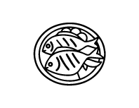
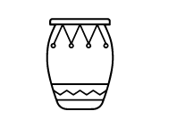
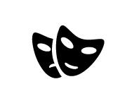

Les origines culturelles de la Guadeloupe sont nombreuses et diversifiées. Elle est le mélange de nombreuses cultures, la culture indienne, la culture sud-américaine, la culture africaine et la culture européenne. La vie culturelle est très active, il se passe toujours quelque chose quelque part qui à un rapport avec la culture, le folklore, la langue, la gastronomie, l’habillement la musique, la danse et les croyances (combats de coqs, attelage de boeufs tirant, veillées mortuaires, fêtes communales, les Lewoz, fête des cuisinières, fêtes Indiennes…). La culture fait partie du patrimoine, elle est présente partout en Guadeloupe, que ce soit dans les villes, les villages ou les campagnes.
Créole
En linguistique, un créole (creole en anglais, criollo en espagnol, crioulo en portugais1) est une langue qui est devenue native dans une société, mais qui descend à l'origine d'un pidgin. Un créole est une «langue» (parlé natif voir dialectes selon les débats) aussi complexe et aussi riche que n’importe quelle autre langue native. Par contre, un pidgin est une langue simplifiée, pauvre et relativement instable qui sert à faciliter la communication entre des populations différentes. Le pidgin se transforme en créole à partir du moment où il est parlé de manière native et permanente par une population. C'est cet usage permanent qui enrichit et complexifie les langues créoles.
Ainsi la cohabitation linguistique des colons et esclaves aux Antilles, en Guyane, en Louisiane et dans l’océan Indien a donné naissance au créole de lexique français , guyanais, louisianais et mascarin (bourbonnais).
La langue créole est issue d’une tradition, elle fut véhiculée par les conteurs. A chaque veillée, un conteur réunissait les grands et les petits pour leur raconter contes et histoires de la tradition. La langue créole est parlée activement en Guadeloupe, elle est apprise dans les écoles et reconnue comme une langue régionale.
Cuisine

La cuisine fait aussi partie de la culture, elle a été influencée par les différentes cultures de la Guadeloupe. C’est une cuisine métissée et influencée par les nombreuses cultures (africaine, amérindienne, indienne et européenne) soit la résultante simple, sans artifice, d'une osmose de tous les peuples qui ont fait escale dans cette région du monde. Les plats traditionnels sont souvent gouteux et épicé. Les épices ont une part très importante dans la cuisine antillaise.
Des grillades épicées des Indiens caraïbes en passant par le calalou africain, la brandade de morue française ou le colombo indien, c'est toute une large palette gastronomique qui compose cette cuisine dont l’art culinaire reflète la manière d'être et de vivre d'un peuple, mais aussi son histoire. Principalement à base de produits de la mer, les plats antillais ont pour point commun de d'utiliser souvent de la viande et du poisson macérés dans un assaisonnement (souvent à base de piments antillais) pour en améliorer le goût. On peut également noter l'utilisation abondante de la farine de manioc.
Musique et danse

On ne peut pas parler de culture guadeloupéenne sans parler de la musique et de la danse. Beaucoup ont des origines africaines. Le Gwoka ou Gwo Ka est principalement joué avec des KA (tambour traditionnel), les esclaves se servaient de la musique et de la danse comme un moyen de communication entre eux. Le Gwoka n’est pas seulement de la musique et de la danse, c’est un art de vie. Autrefois méprisé le Gwoka est redevenu populaire et a pris une place importante dans la culture guadeloupéenne.
Le Gwoka est composé de sept rythmes :
– Le Graj fut créé pour stimuler lors des travaux de production agricole
– Le Kaladja exprime la douleur, la lutte
– Le Lewoz exprime la lutte, un rythme guerrier
– Le Menndé est un rythme de fête (4 temps)
– Le Padjanbèl exprime la joie et la liberté
– Le Toumblack exprime l’amour, la fertilité
– Le Woulé est un rythme lent, il fut créé pour accompagner le travail de fabrication de la farine de manioc
Souvent joué la nuit lors de rassemblements populaires nommés « léwoz ». Le public forme un cercle appelé lawonn dont le centre est laissé libre pour les danseurs. La partie musicale est assurée par des musiciens avertis et par le public qui forme autour d'eux une ronde et donne de la voix en réponse au chanteur soliste (mode chanté question-réponse). Le chanteur soliste est le réel chef d'orchestre de la soirée. Par le chanit qu'il entonne, il indique aux tambourinaires boula lequel des 7 rythmes de la base doit être joué dans la foulée de l'exposition chantée du thème. Le tambourinaire makè répond au chanteur et se charge de suivre par des phrases types les pas du danseur qui rentre ostensiblement dans la ronde.
Cette tradition des swaré léwoz peut donc être remontée aux premiers temps de la culture afro-guadeloupéenne. Ces soirées musicales étaient organisée principalement par et pour les travailleurs agricoles des domaines sucriers. Ils se retrouvaient la samedi soir pour chanter, jouer et danser de la musique au tambour. La disparition de ces communautés agricoles est liée à la dislocation des domaines sucriers à la fin des années 70.
Le gwoka est toujours utilisé durant le carnaval et d'autres fêtes. Il est aussi présent dans les rites funéraires, particulièrement dans les veillées et les vénérés (c'est une seconde veillée, le neuvième jour après l’enterrement).
La reconnaissance populaire de la musique gwoka date des années 60 et 70 grâce aux idées des mouvements nationalistes sur la culture guadeloupéenne et à leur diffusion dans la population. En effet, le regard porté dans l'île sur ce tambour et sa musique était celui du mépris car associés aux gens de mauvaise vie et aux paysans noirs et misérables (mizik a vié nèg).
En 2013, le comité du patrimoine du ministère de la Culture et de la Communication a sélectionné le dossier de candidature du gwoka pour l'inscription à la liste représentative du patrimoine culturel immatériel de l’humanité afin de valoriser le gwoka et d'organiser un réseau d'acteurs, après que cette pratique festive ait été inscrite à l'Inventaire du patrimoine culturel immatériel en France.
Le 26 novembre 2014 le Gwoka est inscrit au patrimoine culturel immatériel de l'humanité.
Carnaval

Le carnaval est un événement festif et culturel annuel qui se déroule sur deux mois environ, du 1er dimanche de janvier (épiphanie) au mercredi des Cendres. Chaque dimanche, le carnaval se passe dans une commune ou deux communes. Le dimanche gras, le carnaval se passe toujours à Pointe-à-Pitre. Le dernier jour du carnaval, le mercredi des cendres est marqué par la mort de Vaval, roi du carnaval. Mais les derniers défilés sont pour la mi-carême. Fortement associé à la création locale et notamment à la musique gwoka, le carnaval de Guadeloupe offre des expressions très diversifiées entre clinquant et messages politiques, entre sauvegarde de la culture et défoulement. Sa particularité (quel que soit le style de groupe) est de proposer des défilés avec des orchestres qui défilent. Il y a plusieurs types de groupes comme les groupes à « caisses claires » , les groupes à « Mas » et les groupes à « po ». La plupart des groupes à po viennent de Pointe-à-Pitre, alors ils défilent tous les dimanches dans cette ville.
Le carnaval a été introduit par les colons au xviie siècle pour faire la fête avant de se restreindre au moment du Carême. Progressivement, les esclaves furent autorisés à y participer. Ils purent intégrer certaines des traditions des colons.Les esclaves pouvaient aussi se moquer de leur maître, sans conséquences. Aujourd'hui encore, l'histoire du carnaval est toujours très présente en Guadeloupe; l'utilisation du fouet a pour objectif de faire la fête et d'utiliser la satire.